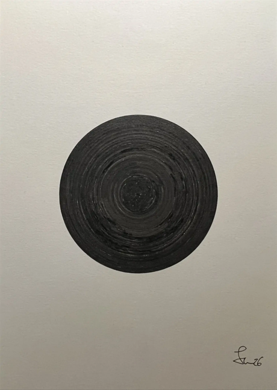

2026 | Pigmentierte Tinte auf Papier | DIN A5 Hochformat
Auf diese Frage würden die meisten vermutlich antworten: "einen schwarzen Kreis", "eine Schallplatte" oder "den Schatten einer
Person mit einem großen Strohhut".
Aber was ist, wenn ich dir sage, dass es gar keine Rolle spielt, was das schwarze Etwas in der Mitte des Bildes ist?
Tatsächlich füllt der schwarze Kreis nur ein Sechstel der Fläche des Papiers aus.
Das Bild soll die Negativitätsverzerrung darstellen. Sie beschreibt, dass das menschliche Gehirn Kritik oft stärker wahrnimmt als Lob und dass
schlechte Nachrichten länger präsent bleiben als positive. In der Psychologie wird häufig gesagt, dass ein Mensch fünf gute Taten tun muss, um eine
Schlechte wieder zu neutralisieren.
Die Eingangsfrage war: "Was siehst du?" -
Die Antworten zeigen, wie schnell das weiße Papier selbstverständlich wird, genauso wie positive Erlebnisse
oft in den Hintergrund rücken, während negativen Momenten mehr Gewicht gegeben wird.
Also frag dich öfter mal: Was siehst du? Einen schwarzen Kreis oder ein weißes Papier mit einem schwarzen Kreis in der Mitte?